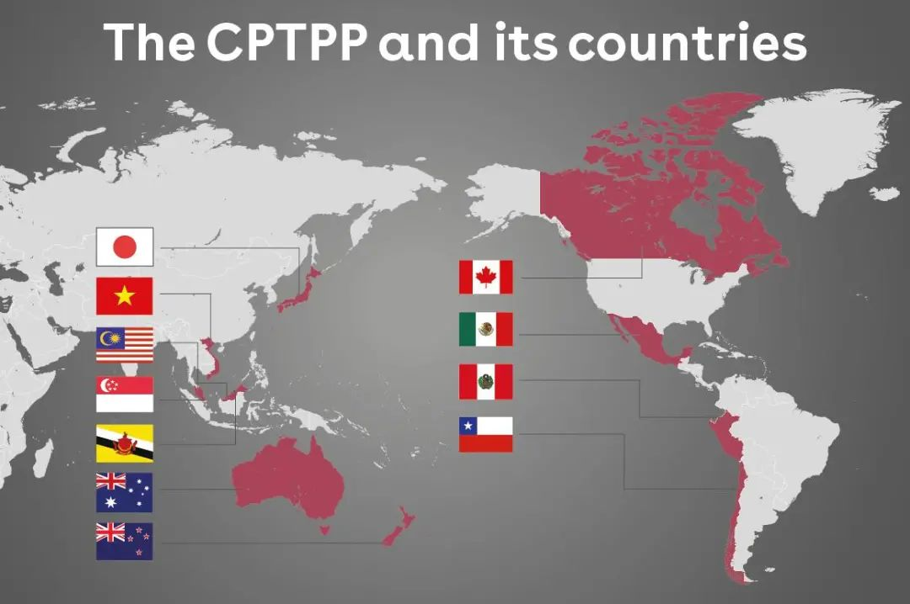
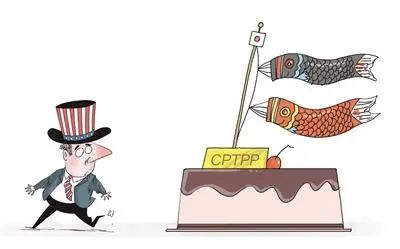
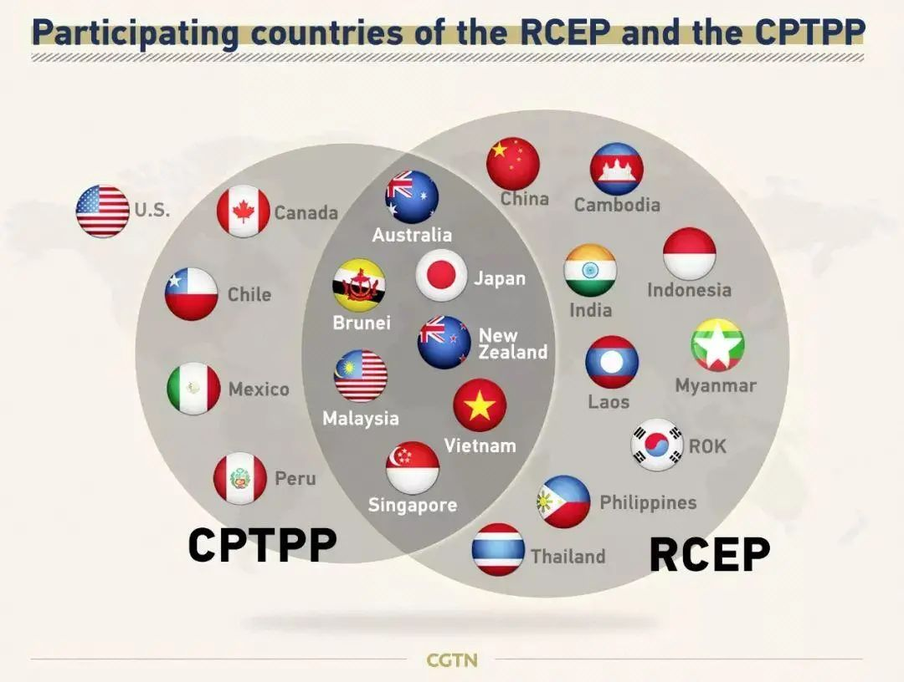

收录于合集 #国政评论 8个

作品简介
【作者】 张庭源：国政学人评论员，对外经济贸易大学国际政治系
【编辑】 韩心蕊
美国退出TPP后，日本等11个成员国推动CPTPP谈判生效，随着国际阻力的减少，国内深化改革的推进，中国加入CPTPP的机遇期已经形成，中央和政府也不止一次地表达了对于加入CPTPP的积极意向。加入CPTPP，符合中国的长远利益，适应经济全球化的潮流，也能够倒逼国内“深水区”改革。但同时，加入CPTPP也面临着外部阻力与内部体制问题，挑战不容小觑。本文将对国内国外学者有关中国加入CPTPP的讨论进行梳理与整合。
关键词： CPTPP；亚太经贸规则；可行性；挑战
01
中国加入CPTPP的进程梳理
(一)CPTPP简介
2020年11月20日，习近平主席以视频方式出席亚太经合组织第二十七次领导人非正式会议并发表重要讲话，指出“中方欢迎区域全面经济伙伴关系协定完成签署，也将积极考虑加入全面与进步跨太平洋伙伴关系协定。”
全面与进步跨太平洋伙伴关系协定，英文缩写CPTPP，是2018年由日本、加拿大、澳大利亚、智利、新西兰、新加坡、文莱、马来西亚、越南、墨西哥和秘鲁11国所签署的多边自由贸易协定。CPTPP前身为TPP（跨太平洋伙伴关系协定），最早是由新西兰、新加坡、智利和文莱四国发起，2009年美国加入后开始发挥主导作用。2016年，12国在新加坡参与TPP谈判并签署协议，但此协议并没有得到所有成员国国内立法部门的批准。2017年特朗普就任总统后宣布美国退出TPP，此后日本掌握主导权。2018年，搁置了包括原协议内5%（22项）左右的条款后（其中11项与知识产权有关），11国达成协议，签署CPTPP。
据统计，CPTPP覆盖约4.98亿人口，国内生产总值之和占全球经济总量的13%，被认为是迄今为止最高水平的经贸自由机制。就CPTPP自身而言，它是一个对中国这样的发展中国家较为友好的高标准贸易协定。其成员国既包括经贸实力强的日本、澳大利亚、加拿大等发达国家，更有经济发展潜力大的智利、马来西亚、墨西哥和越南等新兴经济体，CPTPP在促使发展中国家加速开放的同时予以合理的保护，将公平性与包容性较好地结合，是推动亚太经济一体化的重要机制。

(二)中国加入CPTPP进程的时间线梳理
自2020年11月20日习近平主席第一次在亚太经合组织领导人非正式会议上提出“积极考虑加入全面与进步跨太平洋伙伴关系协定”，中国便正式开始了加入CPTPP的进程。
2020年12月18日闭幕的中央经济工作会议指出：“要积极考虑加入全面与进步跨太平洋伙伴关系协定（CPTPP）”。
2021年1月21日商务部新闻发言人高峰在例行新闻发布会上表示“我们愿与更多贸易伙伴商签自贸协定，共同推动贸易投资自由化便利化，比如，加快推进中日韩自贸协定谈判，推动与海合会、以色列、挪威等自贸谈判进程，积极考虑加入CPTPP”， 再次重申中国加入CPTPP的意愿。
2021年2月4日，商务部召开例行发布会，发言人高峰表示“目前中方正在就加入CPTPP相关事项开展积极研究，同时，我们愿与CPTPP各成员就有关问题加强技术沟通和交流。”
2021年2月24日，商务部副部长兼国际贸易谈判副代表王受文在国新办新闻发布会上透露，商务部已经与全面与进步跨太平洋伙伴关系协定（CPTPP）11个成员中的一些成员进行了非正式接触。
中国支持多边主义和自由贸易，未来还将继续积极推动加入CPTPP的进程，不断提升对外开放水平。
自TPP签署以来，国内就有不少学者讨论中国加入该协议的可能性，随着美国退出后CPTPP的生效，中国“入群”的国际阻力逐渐减少，加入时机逐步成熟，国内学者对于中国加入CPTPP的讨论也十分热烈，从国内国际背景、机遇和可能性、面临挑战等方面对此进行了研究和分析，本文也将对各位学者的观点进行梳理。
02
中国加入CPTPP的机遇和可行性
(一)加入CPTPP的必要性
刘斌和于济民从三个角度分析了CPTPP生效后给中国带来的压力。
一是“被新兴贸易集团孤立”的压力。CPTPP中的数据流通、国有企业、政府采购等条款都是首次写进国际贸易协议，同时还将许多新问题与争端解决挂钩，其解决程序比WTO规则更为复杂。CPTPP在未来将会引领亚太经贸规则的制定，也很可能对全球贸易规则体系产生催化作用。CPTPP生效后形成的多边和区域规则压力会对中国产生巨大冲击，中国只有适应高标准高水平的经贸规则，才能避免未来被排斥在贸易集团之外。樊莹也指出，与其他地区经济一体化协定一样，CPTPP也具有歧视非成员国的商品和服务，以及疏远非成员国直接投资往来等消极作用。一旦CPTPP生效，中国出口至CPTPP成员国的商品将受到歧视性待遇。
二是FTA边缘化的压力。当前中国正在谈判的FTA共14个，且主要集中在亚太地区，而CPTPP的生效，延缓了中国在亚太地区的FTA谈判进程，并且未来逐步形成的以日本为核心的零关税贸易圈在一定程度上也将削弱中方在关税方面的议价能力。日本作为CPTPP的新“群主”，同时又是“印太战略”的始作俑者，不排除未来有可能将CPTPP“印太化”后，又以“限制国企”等条款排斥中国，使中国这个原本在全球价值链中参与程度较高的超大型亚太经济体，难以很好地融入亚太经济一体化进程之中，甚至面临着被边缘化的趋势。
三是国际生产分工重构的压力。据商务部发布的2018年《中国对外贸易形势报告》，CPTPP域内的很多国家是中国的重要进出口贸易伙伴，而CPTPP的实施将不可避免地造成贸易和投资的转移效应，若中国不加入这一协议，很可能导致出口空间压缩、引资吸引力下降的后果。
(二)中国加入CPTPP的有利影响：
**
**
1、获得巨大经济效益
中国加入CPTPP所带来的贸易创造效应，有助于我国在新形势下扩大投资和增加就业，获得巨大的经济效益。苏庆义对中国加入CPTPP能够获得的经济收益进行了量化分析。他基于李春顶教授构建的全球一般均衡数值模型，计算了CPTPP保持目前规模、扩容、美国重新加入等不同情景下的经济效应，结果显示，在不同情景下，中国加入CPTPP将会拉动GDP增长0.74~2.27个百分点、出口增长4.69~10.25个百分点，均显著优于中国不加入CPTPP时GDP仅增长0.25个百分点、出口仅增长0.09个百分点的情景。中国加入CPTPP，不仅仅是中国获益，其他成员国甚至非成员国同样可以在多个经济指标上实现增长，这将为全球生产及贸易做出重要贡献。
2、缓解中美贸易摩擦
刘斌和于济民指出，中国积极考虑加入CPTPP，释放出自愿追求更高贸易标准、自觉融入国际规则、自动降低保护壁垒的信号，一定程度上有助于缓和中美贸易摩擦，推动中美经贸合作谈判。在贸易逆差问题上，如果中国加入CPTPP，受限于更为严格的规则标准和更高的违规成本，很可能加大对美的进口，从而降低两国贸易逆差；同时，加入CPTPP意味着中国愿意进一步开发投资市场，接纳更高标准的投资条款，有助于加速中美BIT谈判；此外，中国加入CPTPP产生的贸易创造效应也可以有效缓解中美贸易摩擦的贸易转移效应。
CCG专家学者团在2018年9月的赴美“二轨外交”系列活动中，与美国国会议员进行交流时，他们认为中国加入或者至少表现出加入CPTPP的姿态，将有助于展示更加开放的中国形象，因为CPTPP在服务贸易、知识产权保护等方面有着更高的标准，加入CPTPP的举措会释放中国希望改进自身的真实性和可信性的信号，美国也将更愿意与加入CPTPP的中国进行进一步的谈判，从而有利于解决中美关系的结构性矛盾。
3、有利于深化改革、推进制度型开放
CPTPP的高标准条款能够倒逼国内机制改革，提高中国有关环境、知识产权、劳工等标准，为加快市场开放程度、完善体制机制改革、解决改革重难点问题提供动力，助力于中国新一轮的“深水区改革”。加入CPTPP也意味着中国将以更高水平的对外开放参与国际大循环，有利于推动对外开放由商品和要素流动型开放向规则等制度型开放转变，形成国内国际大致相同的制度环境。
4、参与全球贸易治理体系建设
苏庆义提到，若中国顺利加入CPTPP，加上目前已经加入的FTAAP和RCEP，有利于在亚太经济一体化中参与整合这三个路径。加入CPTPP，还有利于中国未来参与其他高标准自贸协定的谈判。另一方面，当前世贸组织改革已经成为必然趋势，中国选择加入CPTPP，表明中国愿意提升自己的规则接受能力，愿意积极参与到多边贸易规则的更新过程中，共同参与全球贸易治理体系的建设。
5、改善周边国家外交关系
在CPTPP的连接下，中国能够与亚洲邻国以及美洲国家共同构建更为开放的区域经贸体系，所有成员国都将从中国庞大的经济体量和愈加开放的市场导向型经济中获益。经济上的互利共赢将会带动中国与CPTPP成员国在其他领域的交流合作，改善中国同周边国家外交关系。从地缘政治视角，中国若加入CPTPP，承诺遵守目前最先进的贸易规则，将给这一规则导向的多边贸易体系提供重要支持，某种程度上也填补了美国退出TPP后的缺位。中国、日本、韩国、东南亚之间更为紧密的经贸联系有助于缓解地区紧张局势，同时加强东亚在全球性论坛中的影响力。
(三)中国加入CPTPP的可能性
从规则接受难度来讲，与TPP相比，CPTPP搁置了原有文本中的22项条款，从而适当降低了CPTPP的规则标准，相应降低了新成员加入时的谈判难度。国内方面，中国近年来继续深化改革开放，在许多领域都做出了重要改善，或是已经制定了改革的计划和时间表，如关税壁垒和非关税壁垒、知识产权、外资准入、服务业开放等，这使得中国离高标准规则越来越近。
大多数国家对中国的加入持积极态度。CPTPP生效后，为扩大其影响力、提高其为成员带来的经济收益，必然会考虑扩容问题。包括澳大利亚、新西兰、马来西亚的绝大多数成员国都对中国的加入持欢迎态度。彼得森国际经济研究所的模拟也显示，与中国不加入相比，中国加入CPTPP后现有11个成员国的社会福利、GDP、制造业就业、进出口等的获益程度都会大幅增加。
与TPP时期相比，中国加入CPTPP面临的美国方面的阻碍明显降低。美国起初支持TPP的目的之一就是为了在亚太地区建立起把中国排除在外的经贸圈，因此对中国的加入有明显的排斥态度。拜登政府上台后，美国一改特朗普时期的“退群”策略，重返CPTPP也在其规划之内，中国应该把握住美国退出的窗口期，在美国重返之前尽快开展与CPTPP域内国家的谈判。

从扩容前景看，CPTPP的生效条件相对宽松，在11个签字国中，只需有六个国家完成国内立法机构的审批手续后，即可在60天后自动生效。同时，CPTPP还拟定了未来成员加入的条件，2018年11月20日CPTPP首席谈判代表会议基本敲定将设立工作小组，未来有任何国家和地区提出要求加入，是否同意交由委员会进行审议。其过程先经过工作小组的磋商，最终在委员会进行表决。
03
中国加入CPTPP面临的挑战
虽然目前国内国际背景正处于中国“入群”的机遇期，中国也有加入的必要性和可行性，但若启动正式谈判依旧会面临不少困难和挑战。
首先是来自日本方面的阻碍。目前中日两国的外交政策越来越表现出相互抗衡的态势，两国处于“竞合”关系，如果中国加入由日本主导的CPTPP，将会在一定程度上“稀释”日本在亚太经贸规则上的话语权，日本不会轻易放弃自己的主导权，更不愿让给自己的有力竞争者，未来势必成为中国谈判的一大阻力。据日本共同社12月11日报道，日本首相菅义伟在网络节目中谈到中韩加入一事，表示“门槛很高，将在战略考虑的同时进行应对。” 这一消息某种程度上也表明了日本方面在中国加入CPTPP问题上的争议态度。
其次，虽然美国不在CPTPP成员国之内，但依然可以通过影响CPTPP的主导成员如日本来间接阻挠中国加入的谈判进程。美国当初加入TPP的初衷也是想要掌握亚太经贸规则的制定权，建立起把中国排除在外的亚太经贸圈，即使目前已经退出了TPP协议，也不会轻易让中国在亚太地区轻易获得话语权。
第三，虽然CPTPP相比于TPP已经搁置了22项条款，一定程度上降低了其准入门槛，但对于中国而言，依然存在部分难以接受或者无法接受的硬性条款，其中就包括货物的国民待遇与市场准入、投资、国有企业和指定垄断、知识产权、电子商务、劳工这六个方面，国内改革的道路依然任重道远，很多涉及固有观念、资源分配、社会保障的改革领域步履维艰。并且，由于CPTPP已经生效实施，其扩容计划不会让后来者通过谈判修订已达成的规则，中国在加入CPTPP的谈判中只能做出规则的适应性挑战，而不能参与规则的议定。
第四，加入CPTPP将对中国参与的其他多边框架构成一定挑战。相较于CPTPP的强约束力，亚太经合组织（APEC）是软约束力的机制，CPTPP势必会削弱APEC成员国之间的凝聚力，对中国区域贸易发展形成挑战。另外，CPTPP与RCEP关系的发展趋势也是未知数，考虑到亚太地区地缘经济对抗的激烈性以及RCEP内发展中国家自愿接受CPTPP高标准的政治与现实困难，二者在未来难以走向合作与趋同，更多的是在吸引新成员层面呈现的竞争与对立。

第五，在CPTPP框架下，意味着中国将放宽对电子商务和跨境数据传输的限制，这会给我国的数据主权和网络安全带来一定的风险。
最后，加入CPTPP一定程度上会冲击中国的弱势或幼稚产业。加入CPTPP后意味着零关税大市场，更为激烈的市场竞争会冲击中国尚未发展成熟的民族产业，贸易和资本转移效应可能给国内竞争力稍弱的企业带来较大的负面影响，有些加工制造业可能会加速转移到越南等东南亚国家，进而恶化国内的就业形势。
参考文献
[1]李高超：《被中央提到的CPTPP是个啥？》载《 国际商报》, 2020-12-21, 第002版。
[2]智利等11国签署全面与进步跨太平洋伙伴关系协定, 新华网 2018-03-09报道, http://www.xinhuanet.com/world/2018-03/10/c_129826490.htm，访问时间：2021/2/25
[3]王辉耀：中国可考虑是否加入CPTPP, 环球网, 2019-09-17发布， https://3w.huanqiu.com/a/de583b/9CaKrnKmRAk?agt=11，访问时间：2021/2/25
[4]中央经济工作会议举行，习近平李克强作重要讲话,新华社,中华人民共和国中央人民政府网, 2020-12-18 http://www.gov.cn/xinwen/2020/12/18/content_5571002.htm，访问时间：2021/2/25
[5]商务部重申积极考虑加入CPTPP, 环球网, 2021-01-21https://baijiahao.baidu.com/sid=1689481773579734802&wfr=spider&for=pc，访问时间：2021/2/25
[6]商务部：中方正就加入CPTPP相关事项开展积极研究, 中国新闻网， 2021-02-04 https://www.chinanews.com/cj/2021/02-04/9404863.shtml，访问时间：2021/2/25
[7]商务部：已与CPTPP中一些成员进行了非正式接触, 澎湃新闻, 2021-02-24 https://baijiahao.baidu.com/s?id=1692562047152950038&wfr=spider&for=pc，访问时间2021/2/25
[8]樊莹：《CPTPP的特点、影响及中国的应对之策》，载《当代世界》, 2018-09-05，第8-12页。
[9]刘斌、于济民，《中国加入CPTPP的可行性与路径选择》，载《 亚太经济》, 2019年第5期，第5-13页。
[10]毕晶：《中国加入TPP的利弊权衡及战略选择》，载《国际经济合作》, 2013-08-20，第24-29页。
[11]苏庆义：《中国是否应该加入CPTPP？》，载《国际经济评论》, 2019-07-27，第107-127+7页。
[12]Chunding Li, John Whalley, Effects of the Comprehensive and Progressive Agreement for Trans-Pacific Partnership, The World Economy , 2020-09, p.8
[13]刘斌、于济民：《中国加入CPTPP的可行性与路径选择》，载《亚太经济》, 2019年第5期，第5-13页。
[14]CPTPP, 中国未来自由贸易发展的新机遇, CCG研究报告总26期, No.1 2019年1月, 全球化智库, http://www.ccg.org.cn/, 访问时间2021-3-21 17:31
[15]王辉耀（全球化智库主任） 打造高质量CPTPP符合各方利益需求, 北京青年报, 2021年02月07日, http://epaper.ynet.com/html/2021/02/07/content_369507.htm?div=-1，访问时间：2021-3-21 18:11
[16]Peter A. Petri, Michael G. Plummer, Should China Join the New Trans- Pacific Partnership?, China & World Economy, Vol.28, No.2, 2020, p.18-36
[17]Peter A. Petri and Michael G. Plummer, “China Should Join the New Trans- Pacific Partnership”, Peterson Institute for International Economics Policy Brief 19-1, January 2019, available at: https://piie.com/system/ files/documents/pb19-1.pdf, 2019-06-09.
[18]中国考虑加入CPTPP，遭到菅义伟间接拒绝：中国加入难度颇大, 海峡快讯, 2021-01-07报道 https://baijiahao.baidu.com/sid=1688210975339423100&wfr=spider&for=pc，访问时间：2021/3/1
[19]刘向东，李浩东：《中国提出加入CPTPP的可行性与实施策略分析》，载《全球化》, 2019年05期，第57-69+136页。
[20]余盛兴：《TPP非贸易因素与国际贸易规则重构》，载《WTO经济导刊》, 2018年第7期，第23-25页。
[21]Xianbai Ji and Pradumna B.Rana, A Deal that Does Not Die: The United State and the Rise, Fall and Future of the (CP)TPP, Pacific Focus, Inha Journal of International Studies , Vol 23, 2019, p.118-137。
文章观点不代表本平台观点，本平台评译分享的文章均出于专业学习之用, 不以任何盈利为目的，内容主要呈现对原文的介绍，原文内容请通过各高校购买的数据库自行下载。
好好学习，天天“在看”
国政学人
支持学术公益与知识传播
微信扫一扫赞赏作者 __赞赏
已喜欢，对作者说句悄悄话
取消 __
发送给作者
发送
最多40字，当前共字
上一页 1/3 下一页
长按二维码向我转账
支持学术公益与知识传播
受苹果公司新规定影响，微信 iOS 版的赞赏功能被关闭，可通过二维码转账支持公众号。